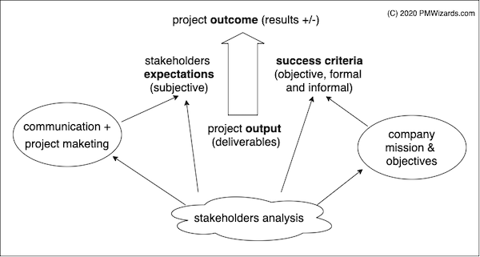

Stakeholder expectation's management is a key success factor to increase your project success.
Stakeholders are usually the single most critical success factor of your project. Internal and external influences can make the project succeed and fail, in spite of a good planning or a large budget. Never delegate activities related to key stakeholders.
The stakeholder analysis is the background to balance the formal project success criteria and the informal stakeholder expectations.

The steps to manage stakeholders are:
Interviewing stakeholders is a key activity that the PM cannot delegate because it is an opportunity to learn about the stakeholders. While various communication techniques existe, Active Listening is usually the best tool for this situation. The PM must ask questions that will provide data to classify stakeholders as Supporters, Opposers or Neutrals (SON). The questions could be:
In terms of communication, be sure to clarify the subjects of interest, the form of communication (meeting, printed report, email), and the desired frequency. With the sponsor a weekly or monthly meeting in person is the best way to solve complex issues, such as decision on changes requested and possible needs to extend budget and/or schedule.
Use a Stakeholder Register to keep track of your stakeholders.